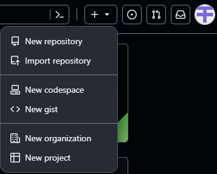
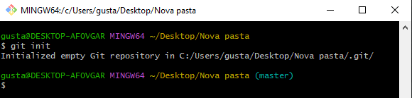
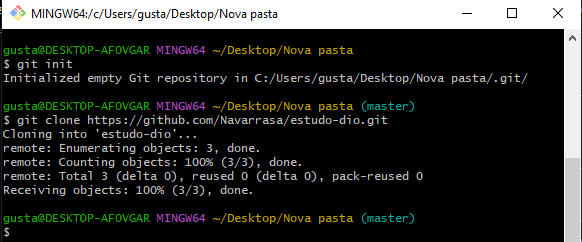

Trabalhando com repositórios do GitHub
Criando Repositórios
Para criar repositórios diretamente no GitHub, primeiro precisamos logar em nossa conta, selecionar a opção +∨ ao lado da Search Bar:
Escolher a opção New Repository, dar um nome ao repositório, uma descrição sobre o que se trata esse repositório, se ele será público para a visuaização e cooperação de outras pessoas, ou privado, onde só pessoas que você escolher pode interagir com o repositório.
Com o repositório criado, podemos iniciar o upload de arquivos de nossos projetos para que as outras pessoas possam visualizar e colaborar com o nosso projeto.
Caso queira iniciar os processos com o Git, precisaremos de uma autenticação via Git, para que as funções sejam liberadas, para isso, precisaremos de um Token, ou uma chave SSH.
Token GitHub
Antes de realizar operações no Git que iriam afetar os repositórios remotos do GitHub, era necessário o login por usuário e senha que o próprio Git solicitava, porém esse tipo de acesso foi substituído em Agosto de 2021, por conta de tentativas de invasão por terceiros. E para evitar esses ataques, foi criado o sistema de Tokens e chaves SSH, que são únicas, podem ser excluídas a qualquer momento, pode-se limitar as ações da pessoa que utiliza o Token e o código do Token é aleatório, dificultando a entrada forçada por invasores.
Para criar um Token no GitHub, precisamos primeiro ir ao site do GitHub:
- Clicar no ícone do perfil
- Ir em configurações
- Configurações de desenvolvedor
- Personal Access Token
- Tokens (classic)
- Generate new Token (classic)
Com o Token em mãos, podemos retornar ao nosso repositório criado, e realizar as operações do Git novamente, porém, desta vez, em vez de colocarmos usuário e senha, colocaremos usuário e o código do Token. Perceba que desta vez, as operações serão concluídas com sucesso.
Chave SSH
As chaves SSH (Secure Shell), é um protocolo de rede que permite a conexão entre o servidor central e o repositório remoto, no caso o GitHub, sendo essa conexão, segura e criptografada.
As chaves SSH são geradas no Git Bash. Caso você não tenha certeza se há uma chave SSH já vinculada ao seu sistema, basta seguir o documento disponibilizado pelo próprio GitHub, para verificar se há chaves SSH existentes no computador local Neste documento.
Para criarmos uma chave SSH, podemos seguir os passos do documento disponibilizado pelo GitHub, Generate New SSH Key.
Com a chave SSH gerada, podemos retornar às configurações de chave SSH do nosso perfil, SSH Keys, dar um título para a chave, se ela será de autenticação para commits, ou assinatura Commit Assignature. A chave que será colada é a chave pública que foi gerada. Para visualizarmos a chave pública, devemos retornar ao Git Bash, e seguir os seguintes passos:
- digitar os comando cd ~/.ssh (comando para irmos à pasta escondida ssh)
- $ ls (ls serve para fazer uma listagem dos arquivos)
- Aparecerá duas chaves, id_ed12345 e id_ed12345.pub. A chave que queremos é a pub
- No Git Bash, digitar o comando cat id_ed12345.pub, para exibir o conteúdo da chave SSH publica
- Colar todo o conteúdo após a execução do cat no site do GitHub, na parte de chaves SSH, SSH Keys
Clonando Repositórios
Existe duas formas para obter um repositório Git na máquina: Transformando um diretório, uma pasta local em um repositório Git, ou clonando um repositório existente.
Transformando um repositório local em um repositório Git:
- Criar uma nova pasta
- Abrir o Git Bash dentro da pasta selecionada
- Utilizar o comando git init

Clonando um repositório remoto:
- Pegar o link HTTPS de um repositório no GitHub
- Voltar ao Git Bash, dentro de uma pasta pré selecionada
- Executar o comando git clone (URL)
